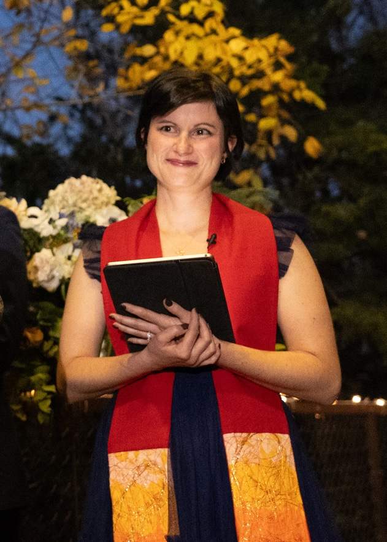

Sermons
- “Ash Wednesday” [Luke 9] – Kensington Community Church, UCC, San Diego CA / March 5, 2025
- “God’s Always-New Covenant” [Jeremiah 36] – Kensington Community Church, UCC, Sandiego CA / November 24, 2024
- “On Earth as it is in Heaven” [Acts 1] – Kensington Community Church, UCC, San Diego CA / May 12, 2024
- “Like a Tree Planted by the Water” [Jeremiah 17; Psalms 1] – Kensington Community Church, UCC, San Diego CA / April 21, 2024
- “Resurrection Thru Re-Invitation” [John 4] – Kensington Community Church, UCC, San Diego CA / April 7, 2024
- “Resurrection Thru (Vulnerable) Relationship” [Ruth 1] – Kensington Community Church, UCC, San Diego CA / March 10, 2024
- “A Grace-Filled Life” [Luke 21; Psalm 25] – Vista La Mesa Christian Church, La Mesa, CA / February 18, 2024
- “Hearts Broken Open, Melted, Transformed” [Psalm 50; Mark 9] – Vista La Mesa Christian Church, La Mesa, CA / February 11, 2024
- “Jesus’s Job Description” [Isaiah 40; Mark 1] – Vista La Mesa Christian Church, La Mesa, CA / February 4, 2024
- “ The Beginning of Wisdom” [1 Corinthians 8; Psalm 111] – Vista La Mesa Christian Church, La Mesa, CA / January 28, 2024
- “Creativity” [Acts 17] – Kensington Community Church, UCC, San Diego CA / November 12, 2023
- “Yearning for Home” [Jeremiah 17; Psalm 1] – Fort Walton Beach, FL / February 13, 2022
- “Un-Conventional Wisdom” [1 Corinthians 15] – Fort Walton Beach, FL / February 6, 2022
- “Advent Joy” [Luke 3]– Fort Walton Beach, FL / December 12, 2021
- “Covenant – God’s Promise” [Joel 2; Psalm 126] – Fort Walton Beach, FL / November 21, 2021
- “Co-laborers in the Kin-dom of God” [Mark 10] – Fort Walton Beach, FL / October 24, 2021
- “Comfort and Challenge” [Mark 9] – Fort Walton Beach, FL / September 26, 2021
- “Losing the Forest for the Trees” [Mark 7] -- Fort Walton Beach, FL / August 29, 2021
- “Pray for the Church” [Ephesians 3] – Fort Walton Beach, FL / July 25, 2021
- “Prisons – Poverty - Congregations” [John 7] Final Project: Sermon – Vanderbilt Divinity School, Nashville, TN / May 2021
- “Creation in Progress” [Genesis 1] – Nashville, TN / January 24, 2021
- “Vulnerable, Unconditional Love” [John 15] -- Nashville TN / December 20, 2020
- “Prodigal Son” [Matthew 22] – Nashville, TN / November 8, 2020
- “Walk Whatever Road’s at Your Feet” [Genesis 50] – Nashville, TN / September 13, 2020
- “FAQ: Science / Evolution and the Bible – How Do We Reconcile” [Proverbs 8] – Nashville, TN / July 19, 2020
- ”Resurrection People” [John 11] – Nashville, TN / March 22, 2020
- “You’ve Still Got To Do It” [Isaiah 58] – Vanderbilt Divinity School, Nashville, TN / February 2020
- “God’s Work of Reversal” [Luke 1] – Vanderbilt Divinity School, Nashville, TN / November 20, 2019
- “Relationship & Re-Membering” [Ruth 1] – Eastwood Christian Church, Nashville, TN / November 3, 2019
- “You’ve Still Got To Do It” [Isaiah 58] – Vanderbilt Divinity School, Nashville, TN / October 21, 2019
Other Writings
- “We are Entering Jerusalem with Jesus” – Fort Walton Beach, FL / Palm Sunday 2022
- “Seven Last Words of Jesus” [Matthew 27] – Fort Walton Beach, FL / Maundy-Thursday 2022
- “The Call to Lament: from Shame and Segregation to Humble and Collective Ministry with God” – Master of Divinity Degree Project; Vanderbilt Divinity School, February 2021